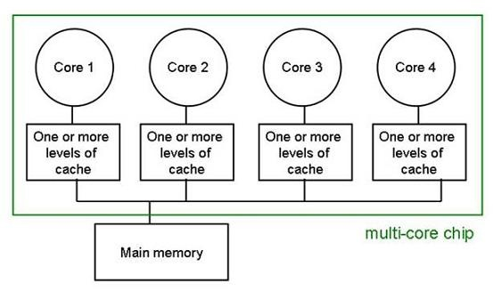
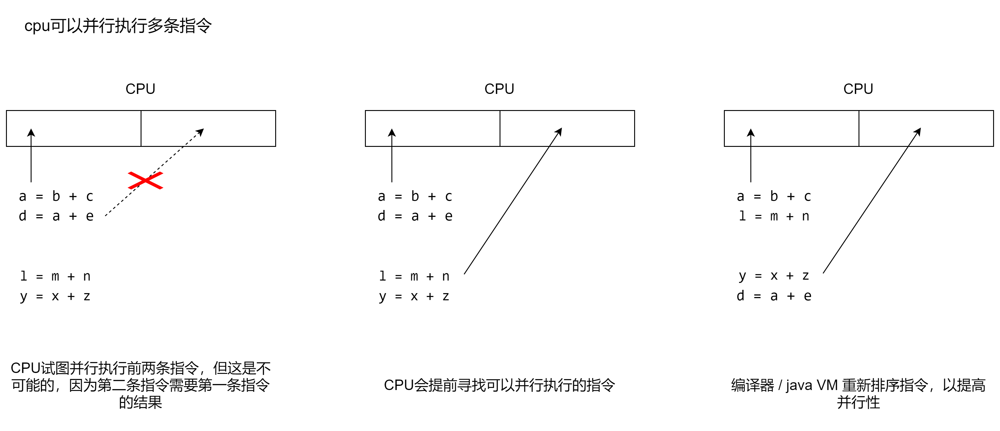

如果使用 Java 开发多线程应用程序，那么需要了解如何在 Java 程序中处理共享变量。共享变量就是某个变量被多个线程使用，就像 Synchronization and Locks#Thread-Interference 文章中的实例变量c，当然静态字段和数组元素都是共享变量；除此之外，可以在线程之间共享的内存称为共享内存或堆内存。
而处理共享变量，一个重要的因素就是 happens-before 关系，但是了解它之前需要先了解可见性。
局部变量、形式化方法参数和异常处理程序参数永远不会在线程之间共享，也不会受到内存模型的影响。
Visibility(可见性)
现在的 CPU 架构都是多核心，每个核心都能够处理多个执行线程；并且对于每个核心，都存在多个级别的缓存，这些缓存定期与主存协调，如下图所示：

针对共享变量的写入操作，会因为每个核心缓存共享变量的值，而导致写入主内存时发生延迟，另一个线程读取到的变量值是个旧值。
考虑下面这种情况：两个线程对同一个变量执行读和写操作。
1 | public class StopThread { |
在backgroundThread线程中一直递增i的值，直到stopRequested变为true。
理想情况下，程序应该运行 1 秒，在stopRequested变为true后，backgroundThread应该结束，并且整个程序也会终止。但是如果你在多核计算机上运行上述程序，你会发现程序一直在执行而没有被终止；这是因为两个线程运行在两个不同的核心上，stopRequested将被分别加载到对应的核心缓存中，所以主线程修改stopRequested变量值后，不能保证立即对backgroundThread可见，它会无限循环或变量同步到主内存后才会停止。
也就是说第二个线程观察不到第一个线程的操作结果，所以这个操作是不可见的。
Happens-before relationship
Java 中对 Happens-before 定义为：
如果一个动作 Happens-before 另一个动作，那么第一个是可见的，并且会排序在第二个之前排序。
也就是说，happens-before 可以排序两个动作。
为了更好的理解这句话，首先了解以下重排序(指令重排)；为了提高程序性能 Java VM 和 CPU，在不影响执行结果的前提下都会对代码进行重新排序。假设有下面这样一段代码：
1 | a = b + c |
重排序后，可能会变成下面这个样子，由于前三行没有任何关联(关联指的是变量之间相互依赖，例如第六行代码依赖第一行代码，所以他们之间是有关联的)，CPU 有可能会并行执行前三行，从而提高程序性能。
1 | a = b + c |
使用图形展示了重排序和指令执行的情况：

现在来解释 Happens-before 的定义，“一个动作 Happens-before 另一个动作” 这里说的只是两个动作，也就是说没有相互关联的两个动作之间也会存在 Happens-before 关系。
所以第一行和第三行代码之间是 Happens-before 关系，第一行和第四行之间也是 Happens-before 关系；在上面这四行代码中会存在很多 Happens-before 关系，这里就不一一列举了。
但是要注意，如果这些代码都是由同一个线程(串行)运行，那么无论怎么重排序，程序的执行结果都不会改变；但是重排序并不保证多线程的执行结果。
假设有两个线程分别执行下面的代码：
| Thread 1 | Thread 2 |
|---|---|
| B = 1; | A = 2; |
| r2 = A; | r1 = B; |
A和B都是共享变量，默认值都为零。由于 Thread1 中的两条指令没有相互关联，所以 Java VM 和 CPU 会对它们进行任意排序；同样的 Thread2 中的两条指令也可以任意排序。
下面是重排序后指令执行的第一种情况：
1 | 1: B = 1; |
两个线程在交替执行，r2和r1的值都是默认值零；这是因为 3 和 2 之间并不存在 Happens-before 关系，同样的 1 和 4 直接也不存在。可能你还有一个疑问，就是为啥有时候会出现r2的值为 2，r1的值为 1 的情况呢？
这是一个有趣的情况，这种情况会违背你的直觉；这是因为 Java 内存模型允许读操作可以观察到执行顺序中稍后发生的写操作。
1 | 1: r2 = A; |
r2赋值时会读取A的值，但是同时又观察到了A的写操作，所以r2的值为 2，r1也是同样的道理。值得注意的是，这种情况并不属于 Happens-before 关系。
保证了可见性，但是并不保证原子性。原子操作包含了可见性。
参考资料
Handling Java Memory Consistency with happens-before relationship